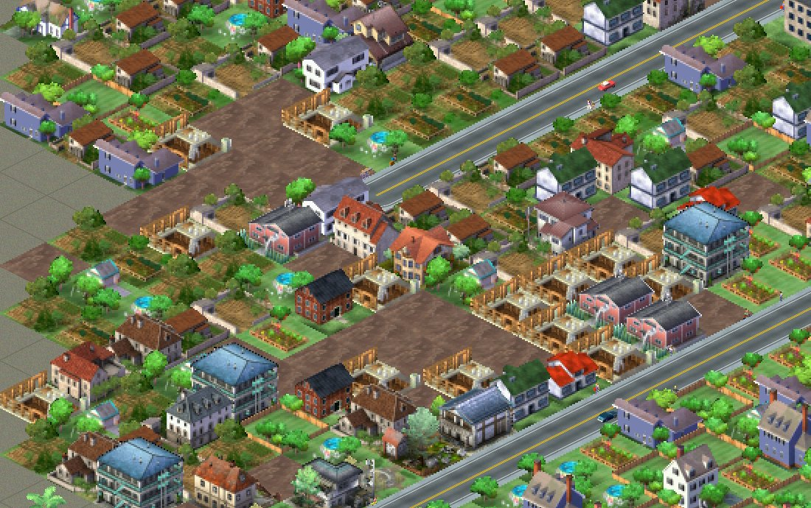
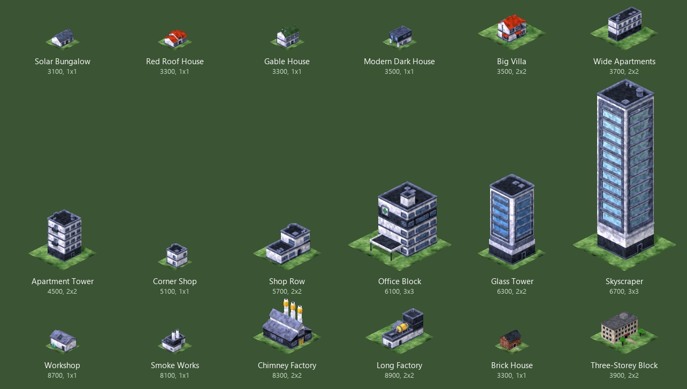
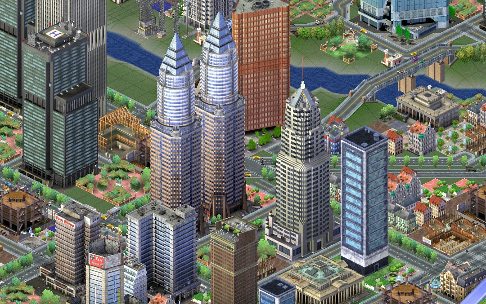
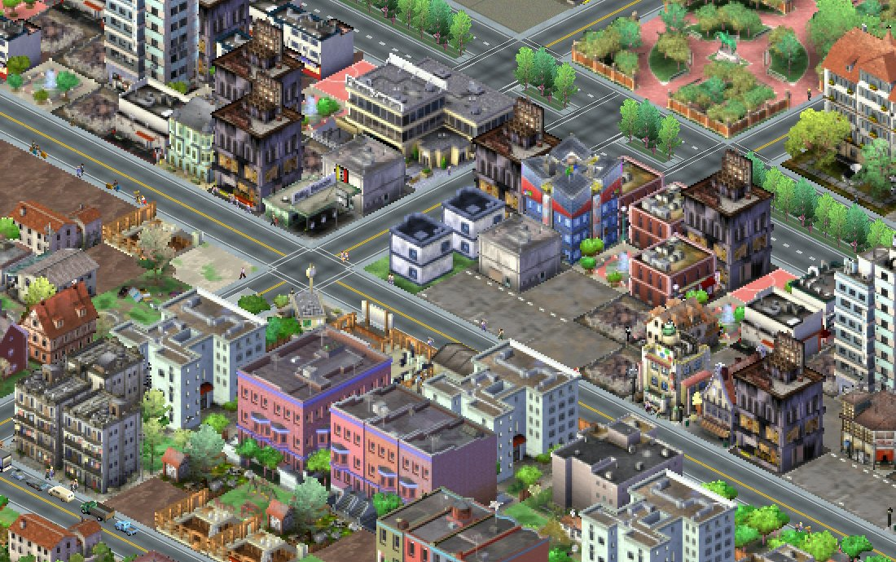
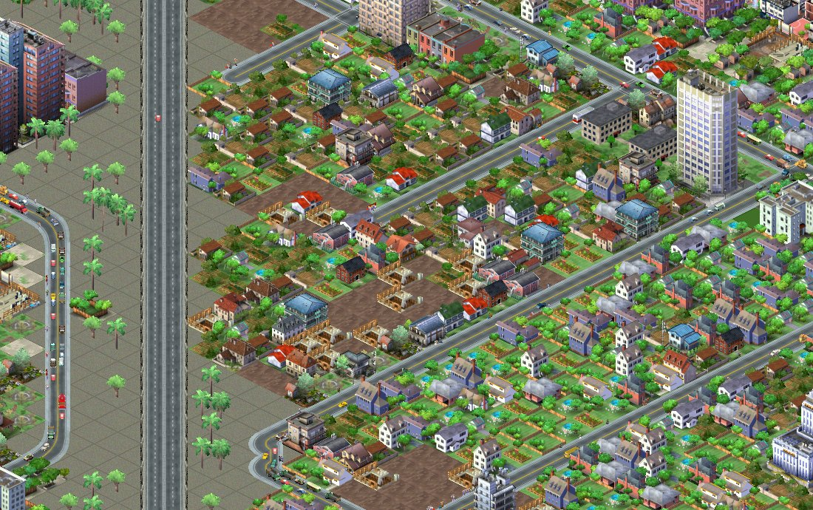

What the tool does
Each enabled model becomes a new growable building. The page draws it in the game's own camera at all five zoom levels and all four view rotations (20 pictures), on its own patch of lawn, and writes it into the game as a member of the building class you picked. From then on it grows on zoned lots of that class, like the stock buildings of the class, and takes its jobs, residents and pollution from a stock building of the same class and lot size. Airport and seaport buildings grow the same way in their own zones.
Nothing stock is replaced. Your buildings join the stock ones in the same families, and the weight you give each one sets how often it is picked.

What it does not do
- New civic buttons. A civic model is a second look for a civic button the game already has (Civic buildings), and a new reward joins the stock Rewards list (Rewards).
- Lots that are not square. A building sits on a 1x1, 2x2, 3x3 or 4x4 lot, as every stock growable does.
- Night lights and animation. The stock houses have none either.
- 3D formats other than OBJ, the Building Architect's
.bldand SimCity 4 buildings. Convert glTF, FBX or anything else to OBJ first (Blender does it).
The sample pack
18 buildings: 16 from Kenney's free city kits and 2 test models of ours. They cover residential, commercial and industrial classes from low to high wealth, on 1x1, 2x2 and 3x3 lots, with weight 2 each, near the stock weights of 1 to 3. In our tests in Sacramento and Berlin all 18 grew on their own. The Skyscraper (class 6700, dense high-wealth commercial) grew only after we made Berlin rebuild its commercial lots more often, because that class otherwise changes few lots.
Download the sample pack (zip)








| Building | Class | Lot | Size | Weight | Source |
|---|---|---|---|---|---|
| Solar Bungalow | 3100 Residential light, low wealth | 1x1 | 13 x 9 x 7 m | 2 | Kenney |
| Red Roof House | 3300 Residential light, mid wealth | 1x1 | 13 x 10 x 8 m | 2 | Kenney |
| Gable House | 3300 Residential light, mid wealth | 1x1 | 13 x 10 x 11 m | 2 | Kenney |
| Modern Dark House | 3500 Residential light, high wealth | 1x1 | 12 x 10 x 9 m | 2 | Kenney |
| Big Villa | 3500 Residential light, high wealth | 2x2 | 23 x 18 x 15 m | 2 | Kenney |
| Wide Apartments | 3700 Residential medium, low wealth | 2x2 | 23 x 10 x 16 m | 2 | Kenney |
| Apartment Tower | 4500 Residential dense, mid wealth | 2x2 | 18 x 18 x 30 m | 2 | Kenney |
| Corner Shop | 5100 Commercial light, low wealth | 1x1 | 11 x 13 x 11 m | 2 | Kenney |
| Shop Row | 5700 Commercial medium, low wealth | 2x2 | 28 x 17 x 15 m | 2 | Kenney |
| Office Block | 6100 Commercial medium, high wealth | 3x3 | 39 x 31 x 42 m | 2 | Kenney |
| Glass Tower | 6300 Commercial dense, low wealth | 2x2 | 24 x 24 x 52 m | 2 | Kenney |
| Skyscraper | 6700 Commercial dense, high wealth | 3x3 | 28 x 31 x 120 m | 2 | Kenney |
| Workshop | 8700 Industrial clean, light | 1x1 | 12 x 16 x 9 m | 2 | Kenney |
| Smoke Works | 8100 Industrial dirty, light | 1x1 | 15 x 12 x 15 m | 2 | Kenney |
| Chimney Factory | 8300 Industrial dirty, medium | 2x2 | 21 x 27 x 24 m | 2 | Kenney |
| Long Factory | 8900 Industrial clean, medium | 2x2 | 30 x 15 x 17 m | 2 | Kenney |
| Brick House | 3300 Residential light, mid wealth | 1x1 | 12 x 12 x 9 m | 2 | sc3kre test model |
| Three-Storey Block | 3900 Residential medium, mid wealth | 2x2 | 23 x 22 x 13 m | 2 | sc3kre test model |
What is in the zip
- One
.objand one.mtlper building, and the textures inTextures\. importer\: the building importer (index.htmlandbldweb.js), the same page as the online one. Openindex.htmlin Chrome or Edge.models.json: the name, class, lot, weight, scale and rotation of every building, as the page writes it. Open the folder in the page to see or change them.sc3build\ids.json: the building ids (38000 and up). Keep it with the folder. It is what lets a saved city find its buildings again after you reinstall.CREDITS.txt,Kenney_License.txtandREADME.txt.
Most models are by Kenney, from the free City Kit Suburban, Commercial and Industrial, released under CC0 (public domain). Two are test models of ours, also CC0. You may change them, share them and use them in your own packs.
Making or finding a model
Any OBJ model works if it follows these rules. Blender's OBJ export with its default settings already gives the right axes.
| Rule | Value | Why |
|---|---|---|
| Units | metres | One lot cell is 16 m wide. A 10 m wide house fills a 1x1 lot like a stock cottage. |
| Up axis | +Y | OBJ convention and Blender's default export. |
| Front | +Z | What faces you in Blender's front view. The front is drawn on the lower-right face in the first view rotation, the side stock shopfronts face. |
| Ground | the lowest vertex | The model is set down so its lowest point touches the ground, and its footprint is centred on the lot. |
| Footprint | at most 16 / 32 / 48 / 64 m | For a 1x1 / 2x2 / 3x3 / 4x4 lot. A larger model overhangs the neighbouring lots, and the page warns about it. |
| Height | any | Tall buildings draw taller. The sample skyscraper is 120 m. |
You do not have to model at the right size. The page has a Scale field per model, and the Kenney models in the sample pack use scales from 9 to 22 because the kits are not in metres.
Lot sizes
Pick the lot from the footprint: a model up to 16 m across goes on 1x1, up to 32 m on 2x2, and so on. Not every class has every lot size, because the game copies the stats (jobs, residents, pollution) of a stock building of the same class and size. The page offers only the sizes that exist:
| Class | What | Lot sizes |
|---|---|---|
| 3100 | Residential light, low wealth | 1x1 |
| 3300 | Residential light, mid wealth | 1x1 |
| 3500 | Residential light, high wealth | 1x1, 2x2 |
| 3700 | Residential medium, low wealth | 2x2, 3x3 |
| 3900 | Residential medium, mid wealth | 2x2 |
| 4100 | Residential medium, high wealth | 2x2, 3x3 |
| 4300 | Residential dense, low wealth | 2x2, 3x3 |
| 4500 | Residential dense, mid wealth | 2x2, 3x3, 4x4 |
| 4700 | Residential dense, high wealth | 3x3, 4x4 |
| 5100 | Commercial light, low wealth | 1x1 |
| 5500 | Commercial light, high wealth | 1x1, 2x2 |
| 5700 | Commercial medium, low wealth | 2x2, 3x3, 4x4 |
| 6100 | Commercial medium, high wealth | 2x2, 3x3 |
| 6300 | Commercial dense, low wealth | 2x2, 3x3 |
| 6700 | Commercial dense, high wealth | 3x3, 4x4 |
| 8100 | Industrial dirty, light | 1x1 |
| 8300 | Industrial dirty, medium | 2x2 |
| 8500 | Industrial dirty, dense | 1x1, 2x2, 3x3 |
| 8700 | Industrial clean, light | 1x1, 2x2 |
| 8900 | Industrial clean, medium | 2x2, 3x3 |
| 9100 | Industrial clean, dense | 3x3, 4x4 |
| 9300 | Farm | 1x1, 2x2, 3x3 |
Textures and colours
- Colours come from the
.mtlfile:Kdfor a flat colour,map_Kdfor a PNG or JPEG texture. Put the texture inside the models folder (in it or in a subfolder) and write its path relative to the.mtl. The page cannot read a texture outside the models folder. - The faces are drawn flat-shaded and two-sided, so vertex normals and smoothing groups make no difference.
- Transparent texture pixels, normal maps, bump maps and specular maps are not used.
- A 1x1 lot is 128 pixels wide at zoom 4, the closest zoom, so fine texture detail turns into a few pixels. Bold windows, doors and roof edges read better than photo textures.
Polygon budget
There is no hard limit. The models in the sample pack hold from 34 to 8,700 triangles each, and the Python version of the tool drew all 18 in under 3 minutes on our PC. More triangles cost drawing time when you install, not frame rate in the game: the game only ever sees the 20 finished pictures.
Where to find models
- Kenney's kits (CC0): the sample pack's source. City Kit Suburban, Commercial and Industrial include roads, trees and fences too. Leave those out, only buildings grow.
- Any model you have the right to use. Check its licence before you share a pack built from it.
- Your own, from Blender, SketchUp or any tool that exports OBJ.
Classifying the models
Open the building importer in Chrome or Edge: online at nanofives.github.io/sc3kre/buildings/importer, or open importer\index.html from the sample pack zip straight from the disk. Both are the same page. It needs no server and nothing to install. The 3D preview of each model loads its 3D library from the internet.
- Select Open folder and pick the folder with your models. Each model shows as a card with a 3D view you can turn.
- Select a card (or several) and set the fields on the right:
- Kind:
growablefor a building of a residential, commercial or industrial zone,airportorseaportfor one that grows in those zones (Airports and seaports),landmarkfor one you place from the landmark menu (Landmarks),civicfor a second look of a civic button (Civic buildings),rewardfor a new entry of the Rewards list (Rewards). - Class: residential, commercial or industrial, its density and its wealth (the table above). Airport, seaport and landmark buildings have no class.
- Lot: 1x1 to 4x4. Airport buildings are 1x1 only, seaport buildings 1x1 or 2x2.
- Description, for a landmark, civic look or reward: the line under its name in the landmark menu or the Rewards list.
- Base, for a civic look only: the civic button it belongs to. It also sets the lot.
- Population and Year, for a reward only: when it joins the Rewards list.
- Weight: how often it is picked against the other members of its family. Most stock buildings have weight 1, a few have 2 or 3. The sample pack uses 2. For an airport building the weight works differently, see Airports and seaports.
- Scale and Rotate (deg): size and turn (in 90 degree steps) before the model is set on its lot.
- Name: what the query box shows.
- Kind:
- Suggest for all fills kind, class, lot and height from each model's size and name, as a starting point. A name with airport, hangar, terminal or runway in it suggests an airport building, one with seaport, harbour, harbor, dock, pier, shipyard or crane a seaport building.
- Clear Enabled to leave a model out without deleting it.
- Select Save models.json. The file goes into the models folder, and you can open the folder again later to carry on.
Installing and removing
Close the game before you select Install or Remove. The page cannot see whether the game is running, so it does not check. Install the sc3mods road mod (sc3netmod) first: the buildings go into its overlay folder, and the page refuses a game folder without it.
- In the same page, with your models folder open and classified, select Game folder and pick your SimCity 3000 Unlimited folder (the one with
Apps,CitiesandBuildingsin it). The page checks that it is a game folder with the road mod, and remembers it for your next visit. - Optional: pick a Look.
stockis the default and matches the stock art.stock, sharp zoom 4draws the closest zoom at full detail.cleanis plain, without the stock grain. A model that names a style inmodels.jsonkeeps its own. - Close the game and select Install into the game. The page saves
models.jsonif you changed it, draws each enabled model (20 pictures each, with a progress line per model), shows each building in its four views, and writes the files. - Start the game and load a city. New buildings grow as lots of their class develop or redevelop, so give the city some time at a fast speed.
To take them out again, close the game, open the page, pick the game folder and select Remove from the game. Every file goes back to how it was before your first install, and the picture file the install created is deleted.
Selecting Install again replaces the last install and keeps the same ids. So add, change or remove models in the folder and install again. If you also use the BAT conversion script (bat_growables.ps1), run it first and install your models after it.
When the browser cannot write into the folders
Firefox and Safari cannot write into folders, and Chrome or Edge can refuse a folder (for example one under Program Files). The page then offers, under No folder access:
- Make the install .zip: you pick the game folder in the browser's upload picker, and the page downloads
sc3-buildings-install.zip. Unpack it into the game folder and replace the files it asks about. If the page could not write into your models folder either, it also downloadsids.json: put it in the models folder'ssc3buildfolder. - Make the removal .zip: downloads the original files to put back, plus
DELETE_THESE_FILES.txt, which names the file the install created. Unpack the zip into the game folder and delete that file.
Where the files go
- The game:
mods\netmod\overlay\Apps\Res\(pictures, building records, names in every language, family lists). Backups and the install record go inmods\netmod\bldimport\. - The models folder:
sc3build\ids.json.
Ids and saved cities
Each model file gets an id from 38000 to 38999, kept in sc3build\ids.json in the models folder. Keep that file. A city saved with your buildings finds them again only if they keep the same ids. The sample pack ships its ids.json, so every player who installs it gets the same ids, 38000 to 38017.
A city saved with imported buildings and opened without them does not crash. In our test with the same kind of files, each of those lots showed a stock building of the same type in its place. Airport and seaport lots get runway strips and pier pieces instead (Airports and seaports).
Airports and seaports
Your models can also grow in airport and seaport zones, among the stock terminals, hangars, cranes and warehouses. Set the kind to airport or seaport and install as usual. They take no class: the game gives them the stats of a stock airport or seaport building and counts them as airport or seaport buildings.
| Airport | Seaport | |
|---|---|---|
| Lot | 1x1 only | 1x1 or 2x2 |
| Where it grows | on the airport's 1x1 filler lots, where the stock parked planes grow | on the dockyard lots served by the piers |
| Stats from | Parked Airplane | Seaport Crane (1x1), Seaport Loading Bay (2x2) |
| Weight | 1 to 20. The airport ignores weights, so the page writes the building into the airport's list as many times as its weight: a weight of 5 is 5 copies | as for zoned buildings, against the other seaport buildings |
The runways, the tarmac, the control tower and the piers stay stock. Nothing you import replaces them.
What the page suggests and warns about
- Suggest for all picks
airportwhen the model's name has airport, hangar, terminal or runway in it, andseaportfor seaport, harbour, harbor, dock, pier, shipyard or crane. It sets an airport building on 1x1, and a seaport building on 1x1 or 2x2 from its footprint, and says why on the card. - The card warns about an airport building on a lot other than 1x1, a seaport building larger than 2x2, and an airport weight above 20. Install leaves those models out until you fix them.
Our test
We cleared the airport and seaport lots of Sacramento (the runways, tower and piers stayed) and installed three test models: a fuel depot for the airport at weight 5, and a container stack (1x1) and a harbour warehouse (2x2) for the seaport at weight 10. By the first autosave, 2.5 game-run minutes at speed 4, 10 fuel depots, 15 container stacks and 14 warehouses had grown, next to regrown stock terminals, hangars and cranes. They draw at zoom 3 and 4 and in all four view rotations.
A city where the airport and seaport are already built grows your buildings when those lots redevelop. We did not test a city that zones a new airport or seaport from scratch.
If you remove them
A saved city opened without your airport or seaport buildings does not crash, but their lots do not get a sensible stock building back. In our test every lot got a stock piece of the same type and size:
| Your building | Its lot shows |
|---|---|
| airport, 1x1 | a straight landing strip (a runway piece) |
| seaport, 1x1 | a pier piece, on land |
| seaport, 2x2 | a Seaport Loading Bay |
The runway strips and pier pieces stay on those lots until you bulldoze them. No other lot changes. Install the package again with the same ids.json to get your buildings back instead.
Landmarks
A model can also be a landmark: a building you place yourself from the game's landmark menu, like the stock Coit Tower or the Empire State Building. Set its kind to landmark and install as usual. It shows at the end of the landmark menu with its own picture, and you place it where you like. As with the stock landmarks, each one stands once per city: once it is built, the menu shows it greyed out.
| Landmark | |
|---|---|
| Lot | 1x1, 2x2, 3x3 or 4x4. A larger landmark is left out. |
| Stats from | the first stock landmark with the same lot, for example Coit Tower for 2x2, the Arc de Triomphe for 3x3 and the Palace of Fine Arts for 4x4 |
| Class and weight | not used |
| Name | the first line in the landmark menu and what the query box shows |
| Description | the second line in the landmark menu, where the stock landmarks name the city they stand in. Left empty, the name shows there again |
| Ids | from the same range as your other buildings, 38000 to 38999, kept in sc3build\ids.json |
Suggest for all picks landmark when the model's name has landmark, monument, statue, obelisk, memorial, museum, cathedral, basilica, palace, castle, pavilion or temple in it. The Description box shows in the panel when the selected cards are all landmarks.
Where the files go
Landmarks go into one plugin, Apps\PlugIn\bldimport\bldimport.pin and bldimport.dat, the way Maxis shipped its own landmark packs. The game loads every plugin in Apps\PlugIn by itself when it starts. They are not written into the road mod's overlay folder.
Our test
Two test models, an obelisk on 2x2 and a pavilion on 3x3, and the 251 m SimCity 4 office tower as a 4x4 landmark (SimCity 4 buildings) were placed in Madison. They draw at zoom 3 and 4, and the two test models drew in all four view rotations and stood where they were after the city was saved and loaded again.
Removing landmarks
Remove from the game deletes the plugin. A city saved with your landmarks and opened without them does not crash. The landmarks are gone, and each of their lots shows orange-brown ground: the game still marks those cells as the lot of a placed building, with nothing on it. You can use that ground again:
- Zone it. Zoning over the orange cells turns them into normal zoned land. In our test 3 cells became residential zone for the usual $10 each.
- Place a building on it. We placed Coit Tower on the lot of the removed tower. If you bulldoze that building later, only its own footprint turns back into plain ground, and the rest of the lot stays orange.
- The bulldozer alone does nothing on an orange cell with nothing on it.
To get the landmarks back instead, install them again with the same ids.json before you open the city. A city saved while they were missing has lost them for good.
Civic buildings
A model can be a second look for one of the game's civic buttons. Set its kind to civic and pick the button in Base. Pressing that button then opens a list: the stock building first, then your looks in the order of models.json, each with its picture and price. Pick one and place it with the usual tool. The price label next to the pointer names the look, for example "Look 2 of 2: Test police look".
The game treats your look as the stock building of that button. A police look is a police station, with the stock price and coverage. The picture and the name are yours.
| Civic look | |
|---|---|
| Base | Police Station, Jail, Fire Station, Hospital, School, College, Library, Museum, Small Park, Big Park, Zoo, Baseball Field, Playground, Pond, Fountain, Bus Stop or Train Station |
| Lot | the stock building's, set by the Base: 3x3 for the Police Station, 2x2 for the Library, 1x1 for the Small Park. Another lot is left out |
| Stats from | the stock building of that button |
| Class and weight | not used |
| Name | what the price label and the query box show |
| Description | optional. Left empty, the stock building's own text stays |
| Ids | from the same range as your other buildings, 38000 to 38999 |
Suggest for all picks civic when the name has police, jail, prison, fire, hospital, clinic, school, college, university, library, park, zoo, baseball, ballpark, playground, pond, fountain, bus, train or railway in it, and the button that word names.
What it needs
The looks go into the landmark plugin, Apps\PlugIn\bldimport, with one more file, bldimport_civic.ini, the list of looks per button. The mods read that list: the row "Civic buildings: more looks" on the Turn mods on or off page switches it. With the mods off the button builds the stock building, and the looks you placed stay where they are.
Our test
A police look on 3x3 in Madison. Placed, our look cost $505 and the stock station $522: the $500 police price plus clearing the lot. Next to a powered building our look drew its own coverage circle on the crime map. It stood where it was after the city was saved and loaded again. With three looks for the Police Station, each of the four entries in the list was picked and placed, and all four still stood after the city was saved and loaded again. Looks for the fire station, school, hospital and college were placed too, and each showed its own service figures in the query window.
Removing looks
Remove from the game deletes the plugin. A city saved with a placed look loads, and the look comes back as the stock building of its button: in our test, the police look as a stock police station.
Rewards
A model can be a new reward. Set its kind to reward and give it a Population and a Year. Once the city has that many people, from that year on (0 for any year), it shows in Rewards and Opportunities next to the stock rewards. You place it once per city: once it is built, it leaves the list.
| Reward | |
|---|---|
| Lot | 1x1, 2x2, 3x3 or 4x4. A larger reward is left out |
| Stats from | the first stock reward with the same lot: the Historic Statue for 1x1, the Mayor's House for 2x2, City Hall for 3x3 and the Stock Exchange for 4x4 |
| Population | a whole number up to 100,000,000. Empty: 20,000 |
| Year | a whole number up to 9999. 0: any year |
| Name | the line in the Rewards list and what the query box shows. A name with a semicolon or an equals sign in it is left out |
| Description | the second line in the Rewards list. Left empty, the name shows there again |
| Ids | from the same range as your other buildings, 38000 to 38999. Each reward is also a building type of its own, with the same number |
What it needs
Rewards get a plugin of their own, Apps\PlugIn\bldimport_rewards. The mods' loader, sc3mods.dll, tells the game about their building types every time it starts, also with every mod turned off on the Turn mods on or off page. The row "New rewards" there switches the list and the unlock.
The stock game, without the loader, cannot open a city that holds one of your rewards. So sc3mods_patch -Restore (and sc3mods_patch.sh --restore) moves Apps\PlugIn\bldimport_rewards to Apps\sc3mods_off\PlugIn, and patching again moves it back. With the rewards moved out, a city that holds one opens with orange-brown ground on the reward's lot, as a removed landmark's lot shows.
With the mods, the query box of a placed reward has Move, as the stock rewards have. Your landmarks have it too.
Our test
Two 2x2 rewards in Madison, a city of about 150,000 people: one at population 1,000 and one at 100,000,000. The first showed in Rewards and Opportunities, the second never did. The first was placed for $21, the price of clearing its lot, and then left the list. It stood where it was after the city was saved and loaded again, and Move took it to another spot for $32. The same city loaded with every mod turned off and without the main mod. With the rewards plugin moved out and nothing telling the game about the types, which is what the stock game sees, it loaded with an orange-brown lot where the reward stood.
Removing rewards
Remove from the game deletes both plugins. A city saved with a placed reward then loads with an orange-brown lot where it stood.
Building Architect .bld files
Downloaded Building Architect buildings (.bld) work in the same folder as your OBJ models. The page reads the name, lot and category from the file and suggests a class. Files from both Building Architects work: the one that comes with SimCity 3000 Unlimited and the older 1999 one.
A .bld file holds the Building Architect's model and one 200 x 200 preview picture, not the game's pictures. The page takes the pictures from the first place that has them:
bld_frames.ixfnext to the.bldfiles: real pictures of all four views, made on your PC by the render kit (Real views for .bld files).- The game's
Apps\BARender\BAT.DAT(the 15 buildings the game ships, and any you once added through the Building Architect): its real pictures, all four views. - Neither: the preview is used for every zoom. The other three views are the same picture or its mirror image, so a building that looks different on each side shows the wrong side in three of the four view rotations. The page marks these as approximate views.
Old 1999 files need the render kit more than new ones. In 8 of the 19 we tested, the preview shows the building from another side than the first view, so preview-made art shows the wrong side even in the first view rotation.
Real views for .bld files
The render kit lets your own Building Architect draw every .bld in a folder from all four sides and save the pictures next to the files. The importer then uses them for the grid and for Install. It needs no Python and nothing else to install.
The kit is in the sc3mods zip since 2026-11-19, in tools\bld_render\ inside the game folder: render_bld.cmd, render_bld.ps1, baappw_patch.ps1, bawinonly.dll and a README.
How to render
- Put the
.bldfiles in one folder, directly in it (subfolders are not read). - If the buildings use parts from a pack, install those parts first (Simtropolis packs). The Building Architect draws a part it cannot find as a plain face.
- Close the Building Architect if it is open.
- Drop the folder on
render_bld.cmd. The Building Architect opens in an 800 x 600 window for a minute or two and closes by itself. Leave it alone while it works. In our tests 17 buildings took 65 seconds and 19 older ones 43 seconds. - The folder now holds
bld_frames.ixf(the pictures) andbld_frames.txt(what ran). Press a key to close the black window. - Open the folder in the importer with Open folder. Each
.bldcard shows its four views, and Install uses them.
Render again after you add or change .bld files in the folder.
Is it safe?
- Your
Baapp.exeis never changed. The kit makes a copy next to it,Apps\BaappW.exe, that loadsbawinonly.dll. No game file is shipped in the kit. - The Building Architect normally switches the screen to full screen. The kit keeps it in a window: it refuses every screen mode change, and it also watches every screen while it runs and closes the Building Architect at once if one changes mode. In our tests the screen mode never changed.
- The game's
Apps\BARender\BAT.DATandApps\Res\BAare never written. - Only one Building Architect is known for now: the one in the GOG version of the game (2.0.949). Any other
Baapp.exeis refused with its hash before anything runs. Please report the hash so it can be added. bawinonly.dllwas checked with the 13 virus scanners on Jotti, and none of them flagged it.- To take the kit's files out of
Appsagain:powershell -ExecutionPolicy Bypass -File baappw_patch.ps1 -Removeintools\bld_render\. It deletesBaappW.exeandbawinonly.dll.
In our in-game test, four 1999 buildings installed with their rendered views: three of them grew in Sacramento within 10 game-run minutes. The fourth is a 3x3 building of a class that city did not develop during the test.
If the render stops, render_bld.cmd prints a code. The kit's README lists what each code means.
Building Architect packs from Simtropolis
Players share Building Architect buildings on Simtropolis as .zip packs. A pack can hold:
- Buildings:
.bldfiles, from the SimCity 3000 Unlimited Building Architect or the 1999 one. - Building Architect parts: the textures and props the buildings are made of,
.tgaand.bmppictures and prop.metfiles, often sorted inPaints,DetailsandPropsfolders. The Building Architect reads them from the game'sApps\BACustomfolder. - Plugins: a
.pinand its.datfiles, the format of Maxis' own add-on landmarks. The page installs them intoApps\PlugIn(Maxis landmark packs). - Readmes, and sometimes other
.zipfiles or installers. The page opens.zipfiles inside the pack and never runs a program from it.
Open a pack
- Open the importer in Chrome or Edge and select Game folder first, so the page can check the parts against your game.
- Select Open SC3 pack and pick the
.zipas you downloaded it. If you already unpacked it, select Open a pack folder in the pack panel instead. The pack is read on your PC, nothing is uploaded and nothing is written yet. - The pack panel lists every file sorted by kind, then one line per building with the state of each part it needs.
The dependency report
For each .bld, every part it names gets one of these states:
| State | What it means |
|---|---|
| colour | a plain colour, no file needed |
| in the .bld | the .bld carries the picture itself |
| game (Res\BA) | one of the game's own parts |
| this pack | the pack brings it. It also says whether it is new, already installed (the same file is in Apps\BACustom), or a conflict (a different file with that name is there) |
| game (BACustom) | a part you installed earlier, from another pack. The page cannot check that it is the same version the author used |
| MISSING | found nowhere: not in the .bld, the game or the pack |
A missing part is drawn as a plain face. It usually comes from another pack: check the pack's readme or its download page for the parts packs it needs, download those, open each one and install its parts. Then open the first pack again and check that nothing is missing. Without a game folder the page cannot check the game's parts, and says so.
Install and remove the parts
- Close the Building Architect. It reads
Apps\BACustomonly when it starts. - If a part is a conflict, the page leaves the game's file alone unless you tick its name. A ticked file is backed up first.
- A part the page cannot sort (not in a
Paints,DetailsorPropsfolder, and named by no.metor.bld) waits until you pick its kind. - Select Install N new parts into Apps\BACustom. Every line goes to the page's Log.
Remove what this page installed puts every backed-up file back and deletes the files the install created. A file that changed after the install is left in place, and the Log names it. The backups are kept in mods\netmod\sc3pack\, apart from the building backups, so removing parts never undoes your buildings.
Without folder access (Firefox, Safari, or a folder the browser refuses), select Read the game folder for an install .zip. Install and Remove then download sc3-parts-install.zip or sc3-parts-removal.zip. Close the Building Architect, unpack the zip into the game folder and let it replace files. A removal zip can also hold DELETE_THESE_FILES.txt: delete the files it names.
Install the buildings
The parts are what the Building Architect needs. The buildings themselves go into the game through the importer, as in Installing:
- Unpack the pack's
.bldfiles into a folder you keep, directly in it. - Install the parts (above), then render the folder for real views (Real views for .bld files).
- Select Open folder, pick that folder, check the classes and select Install into the game. The building ids stay in that folder's
sc3build\ids.json.
For a quick look, Show its N buildings here in the pack panel puts the pack's .bld files in the grid straight from the .zip. That grid has no folder to save in, so install from it with Make the install .zip (under No folder access) and keep the ids.json it downloads.
Maxis landmark packs
In 2000 Maxis released add-on landmark packs for SimCity 3000 as plugins: a .pin file and its .dat files. SimCity 3000 Unlimited still loads them by itself from Apps\PlugIn, and their buildings join the landmark menu. Their pictures are in an older format that Unlimited no longer draws, so a landmark placed from a pack as it was shipped shows as a pale blue grid with no building on it.
The importer installs your own copy of a pack with its pictures converted. We do not ship the packs: they are Maxis' work.
- Open the importer in Chrome or Edge and select Game folder first.
- Select Open SC3 pack and pick the pack's
.zip, or Open a pack folder for a pack you already unpacked. - The pack panel shows one Plugin line per
.pin: how many buildings it holds, the folder inApps\PlugInit goes to, and how many pictures it converts. - Close the game and select Install N plugins into Apps\PlugIn (in a pack that also brings Building Architect parts, the same button installs both).
- Start the game. The pack's landmarks are at the end of the landmark menu.
A plugin file the game already has under the same name with other content is left alone, and the Log names it as a conflict. Remove what this page installed takes the plugins out again. A city where you placed a pack's landmark before converting it draws that landmark once the converted pack is installed.
Our test
We installed Landmark Pack 1 and 2. The page converted their 80 pictures (48 and 32), and the five landmarks of the two packs showed at the end of the landmark menu: Museum Of Modern Art, Transamerica Tower, Palace Of Fine Arts, Guggenheim and New York Public Library. The pack's Palace Of Fine Arts is an entry of its own, next to the stock one. The Museum Of Modern Art, placed in Madison, draws at zoom 3 and 4 and in all four view rotations.
SimCity 4 buildings
The importer also turns SimCity 4 buildings (the BAT buildings you download for SimCity 4) into buildings that grow in SimCity 3000 Unlimited. It reads the download as you got it: the .zip, the LEX installer (.jar) inside it, or the folder with its .dat files. The conversion runs in your browser on your PC. Nothing is uploaded.
SimCity 4 buildings are their authors' work. Convert your own downloads for your own game. Never share the converted buildings, their pictures or the files the page makes from them without the author's permission. Many packs allow changes for your own use and forbid passing them on: read the readme or licence that came with the download.
How to convert
- Open the importer in Chrome or Edge and select Open SC4 .zip. Pick the downloaded
.zip, or the.jarinside it. - Or select Open folder and pick a folder with SimCity 4 files (subfolders are read too). The page then saves
models.jsonandsc3build\ids.jsonin that folder, so your choices and the building ids stay for the next time. - The grid shows one card per building, grouped by design, with the name, class and lot taken from the SimCity 4 data. Packs often hold the same house in several colours: one colour of each design is on, the others are off. Houses the author set at 45 degrees (often on corner lots) are off in every colour and carry a diagonal badge: SimCity 3000 has no diagonal buildings, so they look turned among the stock houses. Switch them on or off in the panel, as for any model.
- Choose the game folder and select Install into the game, as in Installing. Remove works the same way.
Opened from a .zip, the page has no folder to save your choices in. Select Save models.json to download them, and next time pick that models.json together with the .zip.
What converts, and the limits
A SimCity 4 building file holds no full 3D house. It holds four pictures of the house, one per view, painted onto a box around it. The page turns each picture to the SimCity 3000 camera and draws it with its light already in it (the look called baked).
- Converts: growable buildings, with their name, wealth, number of residents or jobs and size. The class follows from wealth and residents or jobs, the lot from the size: a house that fits in 16 m goes on a 1x1 lot. SimCity 3000 has one commercial zone for shops and offices and two commercial wealths, so SimCity 4's $ becomes low wealth and $$ or $$$ high wealth. Up to 100 jobs is light, up to 1,000 medium, more is dense. That is a rule of this tool, not a measured match. Industrial buildings get dirty, clean or farm classes the same way. Of the commercial and industrial buildings, only the office tower below was tried in game.
- Tall towers convert. SimCity 4 cuts the pictures of a tall building into tiles, and the page puts them back together. Our test tower, 251 m tall, became a dense high-wealth office on a 4x4 lot and grew in Berlin by the first autosave, a little taller than the tallest stock tower. As with the sample Skyscraper, that was with Berlin set to rebuild its commercial lots more often (see Troubleshooting).
- Lots up to 4x4. SimCity 3000 lots are square, 1x1 to 4x4, so the lot is the smallest square the building fits in, and it can be one row deeper than the SimCity 4 lot. A building that needs more than 4x4 gets no class and stays off.
- Landmark versions become landmarks. A SimCity 4 download can hold the same building as a growable, a ploppable and a landmark. The page converts the growable, and the landmark version becomes a landmark (Landmarks) with the same pictures, named as in SimCity 4 and described as
From SimCity 4. A ploppable version gets a landmark entry too, switched off, since SimCity 3000 landmarks have no jobs and it is the same building again. The landmark has the building alone, without the props of its SimCity 4 lot. Our test tower's landmark version went into the landmark menu as a 4x4 landmark and was placed in Madison. - Light painted in. Each SimCity 4 picture is lit from the same side of the screen. In two of the four view rotations the converted houses are lit from the other side than their stock neighbours.
- Roofs seen from higher up. SimCity 4 looks down at 45 degrees, SimCity 3000 at 30. In each view one wall is stretched sideways and shows less detail.
- Lot props from the dependency pack and your SimCity 4 game. The fences, trees and cars of a SimCity 4 lot mostly come from other downloads and from SimCity 4 itself. Give the page the BSC Common Dependencies Pack and your SimCity 4 game and it puts them on the lot with the building (Lot props), and the lot's driveways, paths and paving on the ground under it (Lot textures). Without them, the building stands centred on plain lawn and the yard is left out.
- Softer than a 3D model. The pictures are redrawn, not rebuilt, so edges are softer than in the stock art. Where the SimCity 4 camera could not see (around porches and wings), the page fills in with pieces of the same picture.
- No diagonal houses. The page tells a house set at 45 degrees from its SimCity 4 foundation model and leaves it off. Buildings without a foundation model are not checked.
- Night textures are not used. SimCity 3000 has no night view.
bakedbrightens the SimCity 4 art to sit with the stock buildings. For SimCity 4's own brightness, set"x_bldrender": {"style": "baked_raw"}in the entry. It looks darker than the stock neighbours.- Parts the page cannot read (other model formats, a view made of pieces that do not fit back into one picture) skip that building with a line in the log.
Lot props: fences, trees and cars
A SimCity 4 lot places props around the building: fences, trees, parked cars, flower beds, shrubs. Most of them are not in the building's own download. They come from dependency packs and from SimCity 4 itself. The page reads two sources: the BSC Common Dependencies Pack, a download for SimCity 4, and your own SimCity 4 game. Give it both and it draws the props into the building's pictures, so they stand on the lot in every view and zoom and move with the building.
- Download the BSC Common Dependencies Pack. We tested version V9e, a 1.7 GB
.zip. Keep it zipped. - Select Open SC4 .zip and pick the building download and the dependency
.ziptogether (put both in one folder, hold Ctrl and click both). The page reads the large zip in pieces, never whole, and keeps what it found until you close the page. - For SimCity 4's own props (its shrubs, bushes, flowers, trees and cars), give the page your SimCity 4 game too. Either open it first with Open SC4 game (From your own SimCity 4): the page keeps it for the downloads you open after it, until you close the page. Or pick the game's
.datfiles (SimCity_1.dattoSimCity_5.dat,EP1.dat,SimCityLocale.DAT) together with the download in Open SC4 .zip. The page then converts the download, not the game, and reads from the game files only the props it places, in pieces. - The page's note on the download gets two more lines: how many prop rows were placed, on how many buildings, and how many were left out and why, then the ids of the props it found in no source. With your game given, the note says so.
- Install as usual. Each building with props placed installs with them.
What is placed and what is left out:
- Placed: the props of the building's smallest SimCity 4 lot that the download, the dependency pack or your SimCity 4 game holds. As in SimCity 4, a prop in the download or the pack wins over the game's prop of the same id. Seasonal trees are taken in their summer version.
- Left out at the edge: a SimCity 3000 lot is 16 m per cell, often smaller than the SimCity 4 lot, so a prop whose centre falls outside it is left out. A fence that reaches up to 1 m past the edge is moved in.
- SimCity 4's own props come from your game. Many lots use props that come with SimCity 4 itself, such as its own quarter shrub and quarter bush, the two most used props of our test pack. No download holds them. With your SimCity 4 game given they are placed. Without it they stay missing, and the page lists them by id in its note and says how to add your game.
- Left out, moving props: people, children at play, a dog on a chain and a lawn mower. Their props point at no still model the page reads (by their SimCity 4 names they are animated or walk about).
- Lot textures come from the same sources. The driveways and paths the cars stand on are drawn too (Lot textures).
In our test with a pack of 110 houses and its 5,190 prop rows:
- With the BSC pack alone, 486 rows were placed, on 72 of the buildings. 3,454 rows named 54 props found in no source. The two most used of those, in 1,380 and 804 rows, are SimCity 4's own.
- With the Steam SimCity 4 Deluxe alone, 1,786 rows were placed, on all 110 buildings. 1,676 rows named 81 props of the BSC pack.
- With both, 2,236 rows were placed, on all 110 buildings, and no row named a prop missing from both. The other rows were outside the SimCity 3000 lot (2,494), of another season (366) or moving props (94).
We installed 4 of the houses twice, with the BSC props and with the BSC and game props, and all 8 grew in Sacramento by the first autosave. The page gives the same files as our Python tool, to the byte, with the game picked with the download and with the game opened first.
Switching the props off for one building
The props are on for every building that got at least one. To turn them off for one building, set "on": false under "x_sc4", "props" in its entry in models.json, then open the download again with that models.json (picked together with the .zip, or in the same folder) and install. The page keeps your choice each time you open the download again. Set it back to true to get them back.
Lot textures: driveways, paths and paving
A SimCity 4 lot also paints its ground: driveways, footpaths, parking lots, flower beds and patches of worn lawn, each a 16 m square picture laid on the lot. The page reads them from the same sources as the props (the download, the BSC Common Dependencies Pack and your SimCity 4 game) and draws them on the ground under the building, in every view and zoom. Nothing more to do: open the download with the pack and your game as for the props, and install.
- SimCity 3000's lawn stays. Under its paths SimCity 4 lays a grass picture over the whole lot, darker and more yellow than SimCity 3000's lawn. The page draws the paving, soil and flowers and leaves out SimCity 4's grass, so the lot shows the same lawn as the stock lots around it.
- Cut at the edge. As with the props, the SimCity 3000 lot is often smaller than the SimCity 4 lot. A texture that reaches past its edge is cut there, one wholly outside is left out.
- Lit like the lawn. The textures get the lawn's light and its darker front edge, not the brightening of the building's pictures.
- The page's note on the download gets a line on how many texture rows were drawn, cut and left out, and the ids of the textures it found in no source.
In our test pack of 110 houses, with its 634 texture rows:
- The download alone holds none of its lot textures: 0 rows drawn.
- With the BSC pack alone, 526 rows were drawn, on 98 of the buildings. With the Steam SimCity 4 Deluxe alone, 96 rows, on 42 buildings.
- With both, 622 rows were drawn, on all 110 buildings, 556 of them cut at the edge of the SimCity 3000 lot. 12 rows name two textures that neither holds.
- On the SimCity 3000 lots the drawn textures cover from 9% to 58% of the ground (median 34%), and SimCity 3000's lawn the rest.
The civic buildings, parks, rewards and landmarks of SimCity 4 itself (From your own SimCity 4) get theirs too: 2,143 of their 3,675 texture rows were drawn, on 111 of the 112 buildings. Their parking lots and forecourts come along, with the cars standing in the painted bays. 1,532 rows were outside the SimCity 3000 lot.
We installed 4 of the houses twice, with and without lot textures, and all 8 grew in Sacramento by the first autosave. SimCity 4's Small Police Station was placed there as a look of the Police Station button, with its parking lot. The page gives the same files and pictures as our Python tool, to the byte.
Switching the lot textures off for one building
The lot textures are on for every building that got any. To turn them off for one building, set "on": false under "x_sc4", "textures" in its entry in models.json, then open the download again with that models.json and install. The page keeps your choice each time you open the download again, and the props switch works on its own beside it.
Packs that hold only lots
Some SimCity 4 downloads hold only lots and building descriptions, and the buildings themselves come from other downloads. Others place a blank stand-in building and show only lot props. The page converts nothing from these and keeps Install off. Its note says so and names every building that is missing. When the readme lists where to get them, the note shows those links too. Download the building packs it names and open those.
A pack that converts some buildings and lacks others gets the same list for the missing ones. A download that holds only props or textures has no buildings to convert.
From your own SimCity 4: civic buildings, parks, rewards and landmarks
If SimCity 4 is installed on your PC, the page can take its own civic buildings, parks, rewards and landmarks. SimCity 4 sorts each building into groups (civic, park, reward, landmark, and for civic buildings the service: police, fire, school and so on), and the page follows them:
- Civic buildings become a second look of the SimCity 3000 button for the same service (Civic buildings): SimCity 4's police stations under the Police Station button, its fire stations under Fire Station, its schools under School, and so on for jail, college, library, museum and hospital. The look keeps the stock building's lot, coverage and price.
- Parks become looks of a park button. SimCity 4 does not say which kind of park a park is, so the page goes by the name (a softball field goes under Baseball Field, a playground under Playground) and else by the size: the Small Park when it fits one cell, the Big Park when it fits 3x3. The card says which.
- Rewards become new rewards (Rewards). SimCity 4 keeps its reward rules in its own scripts, and the page reads them: when the rule counts the whole city, the reward unlocks at the same population in SimCity 3000 (the Mayor's House at 500, the Courthouse at 40,000). 36 of SimCity 4's 60 reward rules count the whole city. The others count only rich residents, jobs or the region, or no population at all, and get the page's default of 20,000. The card shows SimCity 4's rule. No SimCity 4 rule asks for a year.
- Landmarks go to the landmark menu (Landmarks).
- Buildings that share a name (three private schools, four houses of worship, the mayor's statues) are each converted and the first one is on.
- The props and lot textures of SimCity 4's own lots come along: its cars, shrubs, flower beds, parking lots and paths, since they are in the install too.
- The page keeps the game for the SimCity 4 downloads you open after it, until you close the page, so their lots get SimCity 4's own props and lot textures (Lot props, Lot textures).
- Select Open SC4 game and pick your SimCity 4 folder, the one that holds
SimCity_1.dat. For Steam that issteamapps\common\SimCity 4 Deluxein your Steam folder. You can also select Open SC4 .zip and pick the game's.datfiles themselves. - The page reads only the game's seven data files, the large ones in pieces. It writes nothing into the SimCity 4 folder: select Save models.json to keep your choices, and pick that file together with the
.datfiles next time. - Switch on what you want and install as usual. Your choices of kind, button and population in the panel are kept when you open the game again with that
models.json.
These are EA's buildings from your own copy of SimCity 4. Convert them for your own game. Never share the converted buildings or their pictures.
What does not convert:
- Homes, shops, offices, industry, utilities and transport buildings of the install. Only civic buildings, parks, rewards and landmarks are taken from an install.
- Parks and rewards that are only lot props in SimCity 4 (the plazas, gardens, greens, basketball court, skateboard park and both stadiums): 21 buildings, named in the page's note.
- Buildings that do not fit SimCity 3000's lots: a civic look keeps the stock building's lot (3x3 for a police station), and a reward or landmark can be up to 4x4. Larger ones stay off, with the reason on the card. Of 112 buildings converted from our install, 73 are on.
- The lot textures (paths, paving), as for downloads.
Our test, with the Steam SimCity 4 Deluxe: the page converted 112 of its 113 civic buildings, parks, rewards and landmarks with a model, the same files as our Python tool to the byte. In Madison the Small Police Station, the Small Fire Station and the Gazebo each appeared in their button's list window and were placed, the Mayor's House unlocked at population 500, was listed in Rewards and Opportunities and placed, and all four stood where they were after the city was saved and loaded again. The police look drew its own circle on the crime map: bulldozing it took 180 cyan pixels away and added none.
Tips for a stock look
- Fill the lot. Stock houses cover most of their lot. Size the model with Scale until it does, and compare it with its stock neighbours in the page's preview or in game.
- Add detail you can see from far away: window frames, eaves, porches, chimneys, a dark line where the roof meets the wall. Stock art has more dark detail than a plain model, and that is most of the difference.
- Tone down bright colours. The drawing step adds contrast and saturation to match the stock pictures, so a colour that is already strong gets stronger. The sample pack makes three roof colour variants of the Kenney suburban texture for this:
kenney_suburban_colormap_red,_slateand_moss. Only the roof colour changed, and the.mtlpicks which one a house uses. - Put things on the lot. Trees, fences, a driveway or parked cars belong in the same model as the building. The picture includes everything on the lot.
- Keep weights low. With weights near the stock ones (1 to 3) your buildings mix in. A weight of 20 against stock weights of 1 fills whole neighbourhoods with them.
- Keep the default Look,
stock. It copies how the stock art is lit and coloured, and makes the zoom 4 picture from zoom 3 as the stock buildings do. To give one model another style, add"x_bldrender": {"style": "clean"}(or"stock_sharp") to its entry inmodels.json.



Troubleshooting
My building never grows
- The class needs demand and the right zone: a 3100 house grows only on light residential zones with low-wealth demand. Check the class against the zones and the demand meter of your city.
- Lots develop over time. Run the game at a fast speed for a few game years. A city with no free zoned land grows new buildings only when old lots redevelop.
- Check that the model is enabled (ticked) in the page, and that the sc3mods road mod is installed and on.
- A weight of 1 in a family with many members comes up rarely. Raise it for a test, then lower it again.
- Dense high-wealth commercial (class 6700) redevelops rarely. In our Berlin test the 15 stock buildings of that class held 170 lots before and 166 after 10 game-run minutes, so a new member has few chances to appear. The sample Skyscraper grew there once commercial lots were rebuilt more often (the sc3mods
simrun.inisetting[churn] anarchy_com).
It looks too small, too big or hangs over the road
Change Scale and install again. The tool warns when the footprint is larger than the lot. Check the size against the lot table in Making a model.
The front faces the wrong way
Set Rotate to 90, 180 or 270 and install again. Grown buildings never turn to face their road, stock ones included, so the side you see depends only on the view rotation.
It is grey or a texture is missing
The map_Kd path in the .mtl is wrong, the file is missing, or it sits outside the models folder. Paths are relative to the .mtl file and must stay inside the models folder. Keep file names unique across kits: several Kenney kits call their texture colormap.png, which is why the sample pack renames them.
A .bld building shows the wrong side or has plain faces
The wrong side means the page used the .bld preview: render the folder with the kit (Real views for .bld files) and install again. Plain faces mean a part was missing when the Building Architect drew it: open the pack with Open SC3 pack, install the missing parts, render again and install again.
The render kit refuses my Building Architect
For now it knows only the GOG version's Baapp.exe. It prints the hash of yours: please report it on GitHub or Simtropolis.
I removed a model and my city looks different
Its lots now show a stock building of the same type. Install the model again (with the same ids.json) to get it back. For airport and seaport buildings that stock building is a runway strip or a pier piece, which stays until you bulldoze it (Airports and seaports).
My SimCity 4 building has no fences, trees or driveway
Pick the BSC Common Dependencies Pack together with the download in Open SC4 .zip, and give the page your SimCity 4 game for its own shrubs and bushes: open it first with Open SC4 game, or pick its .dat files with the download (Lot props). The page's note lists the props it found in no source. If the props are there in the page but not in the game, check that "on" under "props" is true in models.json and install again. The same goes for "textures" and the driveways and paths.
The page cannot open my folder
Use Chrome or Edge. The page writes into folders through a browser feature (the File System Access API) that Firefox and Safari do not offer. In any browser, the .zip buttons under No folder access do the same job (see Installing).
Install says the game folder is wrong
Pick the folder that holds Apps, Cities and Buildings, not Apps itself. The page also needs the sc3mods road mod installed in that folder.
Install or Remove stopped halfway
Close the game and select the same button again. The page works from the files on disk and the backups it keeps in mods\netmod\bldimport\, so a second run starts from where things are.